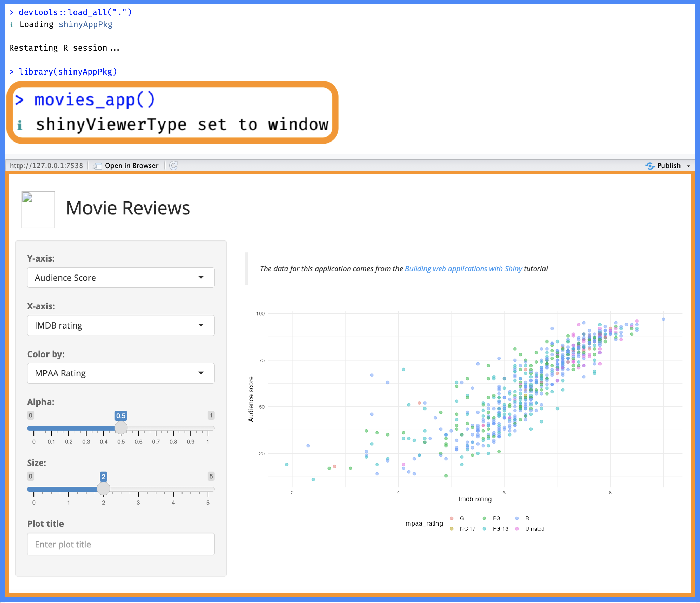
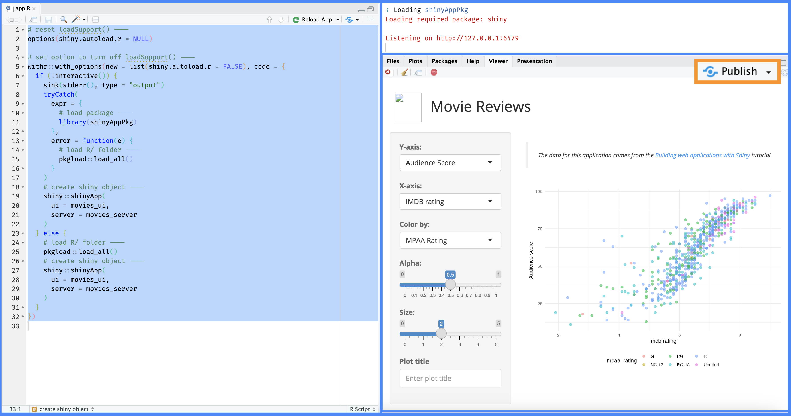

This section is still being developed–it’s contents are subject to change.
In the previous chapter, we moved movies into data/ folder to ensure it’s part of the shinyAppPkg namespace. However, we will still want a way to lunch our app during development (and a process for deploying the application into a production environment).
TLDR
Launching Apps:
shinyApp(): …
runApp():…
Does …`
And …
shinyAppDir():…
Workflow:…
This chapter will cover what belongs in the app.R file, the differences between shiny’s shinyApp(), runApp(), and shinyAppDir() functions, and other options for launching an app (or apps) in your app-package.
app.R
In the current branch of shinyAppPkg, the app.R file loads our package and runs the standalone app function:
Terminology
I’ll be using the term ‘launch’ to differentiate successfully running an application locally (either in the IDE window, viewer pane, or browser) from clicking on the Run App icon or calling runApp() and deploying an application to shinyapps.io.
movies_app() is a wrapper function for shinyApp(), where it passes movies_ui() and movies_server() to the ui and server arguments.
Clicking ‘Run App’
As we can see in the image below, the Run App icon is available in the Source pane:
(a) app.R in main branch
Figure 8.1: Run App icon in app.R of main branch
If we load the code in R/ with load_all(), then click on Run App, we see this calls runApp() in the Console, but this also produces a warning:
(a) Calling runApp() in main
Figure 8.2: The application is launched (with the loadSupport() warning)
app.R (05_roxygen2 branch)
Let’s jump back to the 05_roxygen2 branch of shinyAppPkg. This is the first version of shinyAppPkg with movies_app() in the R/ folder (i.e., in R/movies_app.R).
By moving the call to shinyApp() into the R/ folder, we no longer have the Run App icon in the app.R file:
(a) app.R in 05_roxygen2 branch
Figure 8.3: No Run App icon in app.R of 05_roxygen2 branch
In the 05_roxygen2 branch, the movies_app() function hasn’t been exported, so we should expect the following error when we run the contents of app.R:
Error in movies_app() : could not find function "movies_app"
However, calling runApp() from the Console will launch the app.
Calling runApp()
This behavior might be surprising to you–runApp() can launch the application in shinyAppPkg, even without the standalone app function exported from the package namespace (but it still produces the loadSupport() warning).
(a) runApp() with 05_roxygen2 branch
Figure 8.4: Calling runApp() in the Console of 05_roxygen2 branch
loadSupport()–feature or bug?
The warning in the Console is telling us loadSupport()1 has detected that shinyAppPkg is a package, but it’s still sourcing the R/ subdirectory.
Warning in loadSupport
shiny::runApp()
Warning in loadSupport(appDir, renv = sharedEnv, globalrenv = NULL):Loading R/ subdirectory for Shiny application, but this directory appears to contain an R package. Sourcing files in R/ may cause unexpected behavior.
The examples above demonstrate the differences between calling shinyApp() and runApp(), and the tensions between having a standalone app function in an R package vs. having an app.R file in a Shiny project.
In the following sections, we’ll compare shinyApp(), shinyAppDir(), and runApp() to determine which one to use in R/movies_app.R and the app.R file.
Launching your shiny app
shinyApp(), shinyAppDir(), or runApp()
During development, the Posit Workbench IDE provides the Run App icon for launching the application.
The Run App icon in the Source pane calls runApp())
As we’ve seen, Run App calls runApp(), even when we have a call to shinyApp() in the app.R file. This might make you wonder,
“Why even include a call to shinyApp() if the app is being launched with runApp()?”
Let’s review what happens when we call shinyApp(), shinyAppDir(), and runApp():
shinyApp()
shinyApp()
shinyApp(): Creates and launches an app defined inline within the call itself (or with UI and server functions passed as arguments).
shinyApp(ui =fluidPage(# UI elements ),server =function(input, output) {# Server logic })
One of the key features of shinyApp() is the creation of the shiny.appobj (a shiny app object):
app <-shinyApp(ui = movies_ui, server = movies_server)str(app)
If we look at the structure of the returned object from shinyApp(), we see the shiny.appobj includes the appDir under appOptions:
List of 5$ httpHandler :function (req)$ serverFuncSource:function ()$ onStart : NULL$ options : list()$ appOptions :List of 2..$ appDir : chr "/path/to/shinyAppPkg"..$ bookmarkStore: NULL- attr(*,"class")= chr "shiny.appobj"
1
appDir is the first argument of runApp()
2
A shiny app object
This is why runApp() works with any .R file creating a shiny app object.
shinyAppDir()
shinyAppDir()
shinyAppDir(): Launches an app from a directory (with an app.R or ui.R/server.R files).
This final method does not produce the loadSupport() warning because a Shiny object (shiny.appobj) has already been created, and runApp() is essentially calling print(app) in the Console.
Recap
shinyApp() is typically used to create apps within an interactive R session, while shinyAppDir() runs a Shiny app stored in a directory (containing an app.R file (or ui.R and server.R files). runApp() also launches apps in a directory, but it’s versatility makes it suitable for running apps in various formats, either defined inline or in separate directories.3
App launch options
Below I’ll cover two options to consider when writing a standalone app function (and what you’ll include in app.R).
if (interactive())
The first thing we should include is a check to see if there is a “human operator to interact with” with base::interactive():
if (interactive()) {} else {}
You have probably seen control flow like this in shiny help file examples (like flowLayout() below):
(a) if (interactive()) in flowLayout() example
Figure 8.5: Running examples ‘interactively’ let’s us see the app demo beneath the code
if (interactive()) allows us to distinguish between launching the app from a Posit Workbench session (i.e., during development) and deploying the application (i.e., publishing the application on Posit Connect).
test.mode
One of the shiny options to consider including is the ability to control the application’s behavior with test.mode:
‘Should the application be launched in test mode? This is only used for recording or running automated tests. Defaults to the shiny.testmode option, or FALSE if the option is not set.’
The test.mode argument lets us export values from our application when we’re running tests (which we’ll cover in-depth in the testing chapter).
We’ll make test an logical argument (defaulting to FALSE) in our updated movies_app() function.
We don’t need to explicitly namespace shiny functions (i.e., with shiny::) because we’re using #' @import shiny in the R/movies_app.R file
2
Build the shiny app object with movies_ui and movies_server
3
Include option for test.mode
shinyViewerType
I’ve written display_type() helper function to control where the Shiny app is displayed. The run argument in display_type() takes the following options:
"p" = Viewer Pane
"w" = IDE Window
"b" = External browser
The option to access configuration is shiny.launch.browser:4
The roxygen2 documentation for display_type() is below:
Dependency watch!
The cli package is imported as part the devtools/usethis workflow, otherwise we’d want to add it the Imports field of the DESCRIPTION with usethis::use_package('cli').
show/hide roxygen2 for R/display_type.R
#' Shiny app display mode helper#'#' @param run where to launch app: #' * `"p"` = launch in viewer pane #' * `"b"` = launch in external browser #' * `"w"` = launch in window (default)#'#' @return notification of `shinyViewerType` option#' #' @export#'
Updated movies_app()
In movies_app(), I’ll add the interactive() check, display_type(), and test.mode option:
After loading, documenting, and installing the package, I can test my new standalone app function:
Ctrl/Cmd + Shift + L / D / B

(a) updated movies_app() function
Figure 8.6: movies_app() launches the application without the loadSupport() warning.
Now we can see movies_app() is launching the application without the loadSupport() warning. We can also adjust the test and run arguments to see make sure these are implemented correctly:
(a) test and run arguments in movies_app()
Figure 8.7: Testing the options in movies_app()
Updated app.R
Below are a few options to consider including in your app.R file. There are multiple ways to launch an application from this file, so of these options are required (but you might find them helpful!).
if (!interactive())
What if the session isn’t interactive (i.e., !interactive() == TRUE)?
In this case, we’ll divert all regular output to the standard error stream.
stderr()
The sink() function “diverts R output to a connection”, so the code below sends the output that would normally print to the console to the where error messages are written.
if (!interactive()) {sink(stderr(), type ="output")} else {}
This is useful in a non-interactive settings if we want to re-direct the error output for the console text-mode connection.
tryCatch()
tryCatch() is used for ‘catching conditions’ during the execution of an expression (expr =):
if (!interactive()) {sink(stderr(), type ="output")tryCatch(expr = {library(shinyAppPkg) }, error =function(e) { pkgload::load_all() })} else {}
In this case, if library(shinyAppPkg) throws an error, the function specified after error = is executed (i.e., pkgload::load_all()).5
Written this way, in a non-interactive R session, app.R will re-direct the error output and attempt to load and attach shinyAppPkg, and if this fails, app.R will attempt to load all the files in the R/ folder.
pkgload
Dependency watch!
The pkgload package is imported as part the devtools/usethis workflow, otherwise we’d want to add it the Imports field of the DESCRIPTION with usethis::use_package('pkgload').
If the session is interactive (i.e., !interactive() == FALSE), we want app.R to load all the code in the R/ folder with pkgload::load_all().6
if (!interactive()) {sink(stderr(), type ="output")tryCatch(expr = {library(shinyAppPkg) }, error =function(e) { pkgload::load_all() })} else { pkgload::load_all()}
withr
Dependency watch!
The withr package is imported as part the devtools/usethis workflow, otherwise we’d want to add it the Imports field of the DESCRIPTION with usethis::use_package('withr').
The withr package is designed to ‘run code with safely and temporarily modified global state’, and it comes in handy when launching shiny apps. For example, I want to turn off the loadSupport() behavior when launching the app from app.R.7
I can use withr::with_options() to accomplish this using the following new and code arguments
new: a named list of the new options and their values
code: the ’Code to execute in the temporary environment
I want to place the withr::with_options() at the top of app.R and pass contents of app.R into the code argument. Just to be sure no options for shiny.autoload.r previously exist, I’ll also set this option to NULLbefore executing the rest of the code.
Figure 8.8: The application is launched without the loadSupport() warning
R/_disable_autoload.R
In the documentation for loadSupport(), you’ll find a second option for removing the R/ directory sourcing behavior: placing a _disable_autoload.R file in the R/ directory (this is also one of the behaviors of the golem framework, which we will cover in the following chapters).
Both methods work–this chapter demonstrates a way to remove the loadSupport() warning without having to add this file.
Deploying the app
To deploy the app, I can click on the Publish icon:

(a) Click on the Publish icon
Figure 8.9: Send app.R to Console and click Publish
Make sure all the files in the package are selected, then click Publish
(a) Publishing apps to shinyapps.io
Figure 8.10: Publish the entire package to shinyapps.io
The Deploy pane will open and you’ll see a deployment log as your application is sent to the server:
show/hide deployment log
── Preparing for deployment ────────────────────────────────────────────────────ℹ Creating application on server...✔ Created application with id 10026672ℹ Bundling 24 files: .Rbuildignore, app.R, DESCRIPTION, launch.R, movies.RData, NAMESPACE, README.md, www/shiny.png, man/display_type.Rd, man/mod_scatter_display_server.Rd, man/mod_scatter_display_ui.Rd, man/mod_var_input_server.Rd, man/mod_var_input_ui.Rd, man/movies_app.Rd, man/movies_server.Rd, man/movies_ui.Rd, man/scatter_plot.Rd, R/display_mode.R, …, R/movies_ui.R, and R/scatter_plot.Rℹ Capturing R dependencies with renv✔ Found 63 dependencies✔ Created 258,028b bundleℹ Uploading bundle...✔ Uploaded bundle with id 7740376── Deploying to server ─────────────────────────────────────────────────────────Waiting for task: 1340526445building: Parsing manifestbuilding: Building image: 9212796building: Fetching packagesbuilding: Installing packagesbuilding: Installing filesbuilding: Pushing image: 9212796deploying: Starting instancesrollforward: Activating new instancesunstaging: Stopping old instances── Deployment complete ─────────────────────────────────────────────────────────✔ Successfully deployed to <https://yourusername.shinyapps.io/shinyap-run-app/>Deployment completed: https://yourusername.shinyapps.io/shinyap-run-app/
You can view a deployed version of this application here.
Recap
This chapter has covered some options for launching your app within your app-package. We went over what to include in the standalone app function and the app.R file, the differences between shinyApp(), shinyAppDir() and runApp(), but it’s worth exploring these topics further (especially if you plan on having more than one apps in your package).
Recap: launching your app
shinyApp():
shinyApp() doesn’t care about file structure, so it’s useful for quick prototyping or if the app is in a single .R script. It’s also more portable because you can share your app with a single .R script.
It’s possible to bundle shinyApp() in a wrapper function to integrate within an R package (like we’ve done with movies_app()).
shinyApp() returns a shiny app object, which can be useful if you want to explore the app structure programmatically (i.e., testing).
shinyAppDir():
shinyAppDir() launches an app from a directory, and is useful if an app is spread across multiple files and folders.
runApp()
runApp() a more generalized way to launch an app. It works with:
apps contained in a directory (i.e., runApp('path/to/app')
apps in separate ui.R and server.R files (or a single app.R file)
a shiny app object (passed to the appDir argument).
Clicking on Run App will run the application with runApp() if is detects a file (or files) that creates a shiny object.
In the following chapter, we’re going to cover how to ensure movies.Data becomes part of the shinyAppPkg namespace.
pkgload::load_all() is the function that’s actually called when we run devtools::load_all() (or use Ctrl/Cmd + Shift + L), and this is somewhat analogous to running library(shinyAppPkg)↩︎
You can read more about the shiny.autoload.r option and loadSupport() in this article↩︎